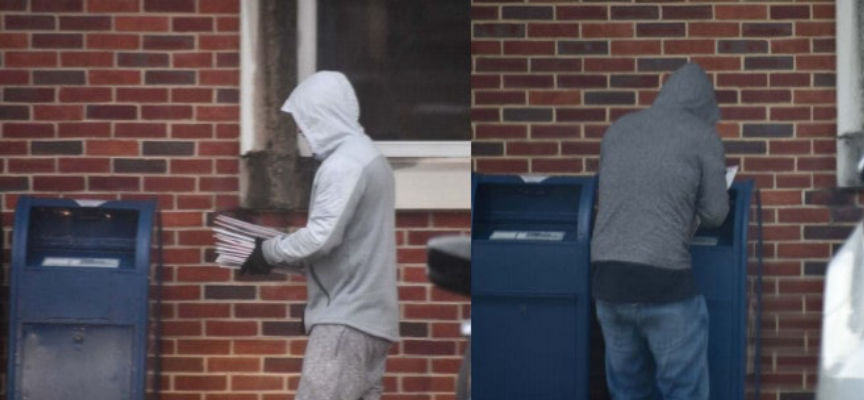
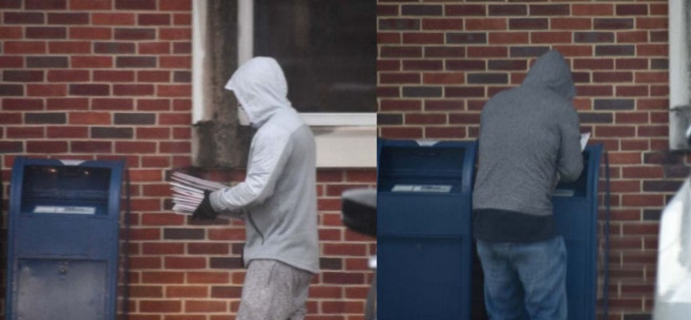

NeverPressedRX Admits Drug Trafficking and Firebombing Plot
~4 min read | Published on 2020-07-13, tagged DarkWeb, Darkweb-Vendor, General-News, Pleaded-Guilty using 925 words.
A Maryland man admitted running the NeverPressedRX vendor account on Empire Market and conspiring to firebomb a pharmacy in Nebraska.
William Burgamy, 32, of Hanover, Maryland, pleaded guilty to one count of conspiracy to distribute controlled substances; committing money laundering by concealing and disguising the nature of the proceeds of specified unlawful activity; conspiracy to possess firearms during a conspiracy to distribute controlled substances; and conspiracy to use explosives to commit the conspiracy to distribute controlled substances.
Earlier this year, the Federal Bureau of Investigation identified Burgamy as the Empire Market vendor “NeverPressedRX.” Through the NeverPressedRX account on Empire Market, Burgamy distributed a variety of controlled substances including Xanax, diazepam, oxycodone, hydrocodone, Adderall, and tramadol. Investigators wrote that Burgamy sold at least 19,000 dosage units of controlled substances. The weight of that many drugs, according to court documents, is more than 700 kilograms.

During the investigation into Burgamy, the Federal Bureau of Investigation also identified the supplier of the pharmaceuticals distributed through the NeverPressedRX moniker. Hyrum Wilson, 41, of Auburn, Nebraska, supplied Burgamy with hundreds of thousands of dollars worth of prescription medication. Wilson ran a pharmacy in Auburn called Hyrum’s Family Value Pharmacy.
After Burgamy’s arrest in April 2020, the FBI uncovered a “Operation Firewood.” The operation was a plan by Wilson and Burgamy to firebomb a rival pharmacy in Nebraska called Cody’s U-Save Pharmacy.
Burgamy sold so many drugs through the NeverPressedRX account that Wilson regularly hit his supplier’s limits on prescription medication. Wilson believed that destroying his competition would “quadruple his business” and thereby quadruple the prescriptions he could divert to Burgamy. Wilson regularly warned Burgamy of the limitations set by his distributor.
For example, in January 2020, Wilson sent Burgamy the following message:
My wholesaler looks at my volume and determines how much oxy I can order every 30 days. Right now my limit is about 60,000 mg per month, so if he [referring to BURGAMY’s alleged firebomb partner] wants 1000 of the 30mg that’s 50% of my allotment right there. But, if I get all the pharmacy business, they’ll bump my allotment up to 250k mg or so, which means I can order 1000 of the 30s every month and still have enough room left over for my legitimate patients.
In court, Wilson described Operation Firewood when asked for an explanation in his own words. He said, “Mr. Burgamy and I came up with a plan in which he would light a competing pharmacy on fire to drive business to my pharmacy.” Wilson told Burgamy that he would stop providing him with prescriptions unless Burgamy destroyed the rival pharmacy.
The FBI arrested Burgamy before he had a chance to execute his plan. However, Burgamy had taken steps to prepare for the firebombing and had fully committed to the plan. He wrote that he had planned on firebombing the rival pharmacy once the government lifted coronavirus restrictions.
Prosecutors compiled a list of the steps Burgamy had taken in furtherance of Operation Firewood.
Burgamy:
crafted the blueprints and details of the attack plot, including how he planned to obliterate Cody’s U-Save Pharmacy; recruited another individual to participate in the attack, agreed to bring that individual to a shooting range for practice before the operation, and instructed that individual to get measured for a plate carrier so that Burgamy could procure body armor for their collective use; emphasized to Wilson that he would never surrender to law enforcement, that if anyone showed up during the firebombing, he would “blast [his] fucking way out,” and that he would shoot bullets at anyone who attempted to confront or apprehend him, including the owner of Cody’s U-Save Pharmacy; assured Wilson that if anything happened to him, he would take care of Wilson’s “family and bills” and hoped Wilson would do the same if Burgamy was killed during the attack; asked Wilson to continue mailing him prescription drugs, including opioids, that would be sold to an individual who Burgamy stated was prepared to help conduct the attack with him; instructed Wilson to create a “getaway” map and escape routes, which Wilson sent through encrypted channels for Burgamy’s use to help him evade law enforcement detection following the attack; informed Wilson that he had stockpiled a cache of firearms and all of the necessary equipment needed to conduct the attack; assured Wilson that the attack would happen and stated, “You know I’ll take care of it” and “You’ll be sole pharmacy, you got my word;” and instructed Wilson to keep his life insurance policy information in a safe place in the event Burgamy was killed during the firebomb attack.
During a search of Burgamy’s house, law enforcement found two AR-15s, one FN SCAR 17S, one Kel-tec KSG, one Remington 870, a Glock 19, a H&K VP9, and a Sig P365.
Burgamy’s drug trafficking operation grossed close to one million dollars, according to prosecutor Raj Parekh. Burgamy agreed to forfeit $300,000. The official calculation of Burgamy’s profits has not been released.
Both Burgamy and Wilson pleaded guilty to one count of conspiracy to distribute controlled substances; committing money laundering by concealing and disguising the nature; and conspiracy to use explosives to commit the conspiracy to distribute controlled substances. Only Burgamy pleaded guilty to the conspiracy to possess firearms during a conspiracy to distribute controlled substances charge.
“All I know is the feds don’t charge unless their shit sticks,” Burgamy wrote in a message to Wilson.
Burgamy’s guilty plea: pdf, html
For information about the investigation into NeverPressedRX, read this article: Empire Vendor NeverPressedRX Arrested by the FBI.
William Burgamy, 32, of Hanover, Maryland, pleaded guilty to one count of conspiracy to distribute controlled substances; committing money laundering by concealing and disguising the nature of the proceeds of specified unlawful activity; conspiracy to possess firearms during a conspiracy to distribute controlled substances; and conspiracy to use explosives to commit the conspiracy to distribute controlled substances.
A picture of Burgamy provided by Alexandria Sheriff's Office
Earlier this year, the Federal Bureau of Investigation identified Burgamy as the Empire Market vendor “NeverPressedRX.” Through the NeverPressedRX account on Empire Market, Burgamy distributed a variety of controlled substances including Xanax, diazepam, oxycodone, hydrocodone, Adderall, and tramadol. Investigators wrote that Burgamy sold at least 19,000 dosage units of controlled substances. The weight of that many drugs, according to court documents, is more than 700 kilograms.

Law enforcement observed Burgamy walking with what appeared to be USPS envelopes
During the investigation into Burgamy, the Federal Bureau of Investigation also identified the supplier of the pharmaceuticals distributed through the NeverPressedRX moniker. Hyrum Wilson, 41, of Auburn, Nebraska, supplied Burgamy with hundreds of thousands of dollars worth of prescription medication. Wilson ran a pharmacy in Auburn called Hyrum’s Family Value Pharmacy.
After Burgamy’s arrest in April 2020, the FBI uncovered a “Operation Firewood.” The operation was a plan by Wilson and Burgamy to firebomb a rival pharmacy in Nebraska called Cody’s U-Save Pharmacy.
A list found during the execution of a search warrant
Burgamy sold so many drugs through the NeverPressedRX account that Wilson regularly hit his supplier’s limits on prescription medication. Wilson believed that destroying his competition would “quadruple his business” and thereby quadruple the prescriptions he could divert to Burgamy. Wilson regularly warned Burgamy of the limitations set by his distributor.
For example, in January 2020, Wilson sent Burgamy the following message:
My wholesaler looks at my volume and determines how much oxy I can order every 30 days. Right now my limit is about 60,000 mg per month, so if he [referring to BURGAMY’s alleged firebomb partner] wants 1000 of the 30mg that’s 50% of my allotment right there. But, if I get all the pharmacy business, they’ll bump my allotment up to 250k mg or so, which means I can order 1000 of the 30s every month and still have enough room left over for my legitimate patients.
In court, Wilson described Operation Firewood when asked for an explanation in his own words. He said, “Mr. Burgamy and I came up with a plan in which he would light a competing pharmacy on fire to drive business to my pharmacy.” Wilson told Burgamy that he would stop providing him with prescriptions unless Burgamy destroyed the rival pharmacy.
The FBI arrested Burgamy before he had a chance to execute his plan. However, Burgamy had taken steps to prepare for the firebombing and had fully committed to the plan. He wrote that he had planned on firebombing the rival pharmacy once the government lifted coronavirus restrictions.
Prosecutors compiled a list of the steps Burgamy had taken in furtherance of Operation Firewood.
Burgamy:
During a search of Burgamy’s house, law enforcement found two AR-15s, one FN SCAR 17S, one Kel-tec KSG, one Remington 870, a Glock 19, a H&K VP9, and a Sig P365.
Burgamy’s drug trafficking operation grossed close to one million dollars, according to prosecutor Raj Parekh. Burgamy agreed to forfeit $300,000. The official calculation of Burgamy’s profits has not been released.
Both Burgamy and Wilson pleaded guilty to one count of conspiracy to distribute controlled substances; committing money laundering by concealing and disguising the nature; and conspiracy to use explosives to commit the conspiracy to distribute controlled substances. Only Burgamy pleaded guilty to the conspiracy to possess firearms during a conspiracy to distribute controlled substances charge.
“All I know is the feds don’t charge unless their shit sticks,” Burgamy wrote in a message to Wilson.
Burgamy’s guilty plea: pdf, html
For information about the investigation into NeverPressedRX, read this article: Empire Vendor NeverPressedRX Arrested by the FBI.